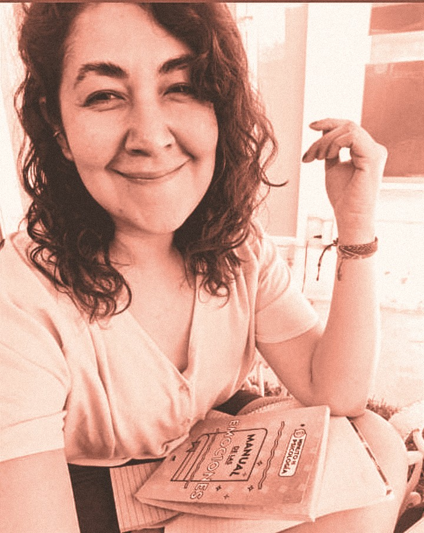
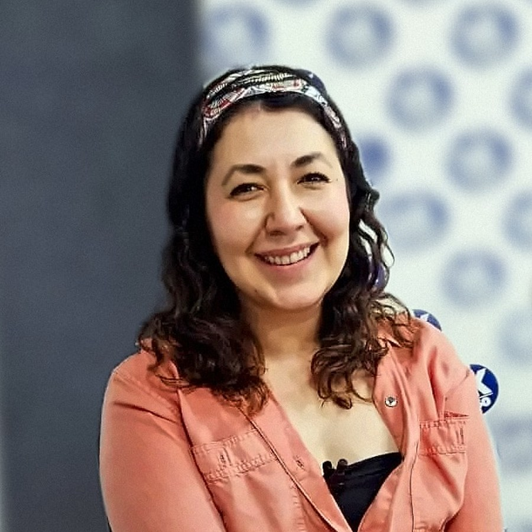

Crianza con límites y afecto
Cómo poner límites sin perder la cercanía, acompañar las emociones de tus hijos y mejorar la comunicación en casa.
PsicoEducAle · Psic. Alejandra García Franco
Acompañamiento psicológico para niñas, niños y familias. Un espacio para entender lo que está pasando en casa o en la escuela y encontrar juntos nuevas formas de convivir.

Todo lo que nos sucede tiene un porqué, y un cómo puede mejorar.
Te acompaño a criar y educar con límites y afecto.
Consulta
Sesiones individuales con un enfoque humanista, cercano y respetuoso. Te acompaño a ti, a tu hija o a tu hijo en lo que están viviendo.
Talleres
Espacios prácticos para aprender en grupo, con herramientas que se pueden usar desde el día siguiente.
Cómo poner límites sin perder la cercanía, acompañar las emociones de tus hijos y mejorar la comunicación en casa.
Talleres para docentes y comunidades escolares:

Quién te acompaña
Soy psicóloga y maestra en Educación. Desde hace más de 15 años acompaño a niñas, niños, adolescentes, familias y equipos docentes.
He coordinado equipos docentes con disciplina positiva y estrategias de convivencia sana. En mi coordinación más reciente logramos:
Trabajo desde un enfoque humanista: escucho sin juzgar y busco, contigo, herramientas prácticas para la vida diaria en casa y en el aula.
Cómo agendar
Cuéntame brevemente qué necesitas y elegimos juntos el día y la hora que te acomoden.
Escribir por WhatsAppTe confirmo por WhatsApp la fecha, la hora y si la sesión será presencial o en línea.
El pago se realiza el día de la sesión.
Si necesitas cancelar o cambiar tu cita, avísame con al menos 24 horas de anticipación.
Escríbeme con tus dudas o para agendar. Te respondo lo antes posible.
También por correo: alejandrafrancoconsultora@gmail.com